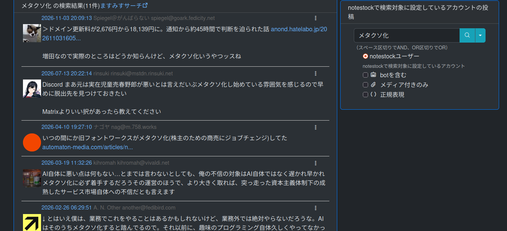

分散型 SNS をもっと活用する

分散型 SNS 用のサービスをメモがてら紹介する。
mochott
mochott は AT Protocol および standard.site Lexicon で駆動するブログサービスである。 Bluesky など atproto 対応サービスのアカウントでサインアップでき，データは mochott のサーバではなく PDS に保存される。
この手のブログサービス自体は珍しくなくなったが，マルチ SNS クライアント「ぞーぺん（ZonePane）」が mochott への投稿機能を実装しようとしているようである。
Blueskyの文字数制限は300文字までです。 これを超える投稿をしたい場合はBluesky本体ならスレッドとして分割投稿することになります。いにしえのTwitterと同じ方式でなじみがありますが、最近のXでは直接長い文章を投稿できたりしますよね。課金要素になっているあたりがいけてないわけですが、収益化とセットで導入されているのでこのあたりに鉱脈があると踏んでいたのがほんのり透けてみえるわけです。 さてそんな中、Bluesky界のトップランナーであるほりべあさんが長文ブログサービスmochottをリリースし、TOKIMEKIとのシームレスな連携を実現しました。TOKIMEKI…もっと見る
— たけうちひろあき (@takke.jp) 2026年11月15日 21:11
こんな感じで，最初の部分を Bluesky へポストしつつ全文は mochott に置く，といった構造になるようだ。
これが本当に実装されるかどうかは分からないが，ぞーぺんユーザとしては期待しつつ mochott のアカウントを取得しておくことにした。

継続して使うかどうかはぞーぺんの開発状況次第だが，ちょっと触ってみた感じでは，イマドキの UI で使い勝手はよさそうである。
【2026-11-18 追記】
ページの <head> 要素内には書かれてないが mochott のフィードは以下のようになってるようだ。
たとえば，ユーザのハンドル名を usrname.bsky.social とするなら，フィードの URL は以下の通り：
https://mochott.site/usrname.bsky.social/rss.xmlhttps://mochott.site/usrname.bsky.social/atom.xml
notestock
Mastodon で最も不満な点は，検索性の悪さである。 これは，まぁ，半分くらいはしょうがない面もある。 Fediverse (federated universe) とは上手いこと言ったもので1，島宇宙たる各サーバはデータも運用ポリシーもそれぞれ独立している。 このため Fediverse 全体を完全に把握して検索するというのは相当難しい。
にしても，自身の過去ポストくらいもう少し上手く検索できるようにしてほしい。
そこで notestock である。
notestock はものすごく簡単に言うと 𝕏 における Twilog みたいなサービスで，自身の公開ポストを過去に遡って収集・保存してくれる。 検索については全文検索に対応しているので，いつ書いたか忘れてしまった過去のポストを簡単に見つけることができる。
また notestock で収集したポストを公開すると「グローバル検索」の対象にすることもできる（既定は非公開）。 自身のポストを公開している人は割といるみたいで，たとえば「メタクソ化」で検索すると


という感じに結構な数が引っかかる。
Fedibird のすゝめ
実はもうひとつ全文検索が可能な手段がある。 それは Fedibird の検索機能の利用である。
Fedibird は標準の Mastodon からかなりの魔改造を施していて，全文検索機能に対応している。 さらに日本語圏にあるサーバとしてはユーザ規模も大きく2，他サーバのユーザも積極的にフォローしているようだ3。 このため，設定で検索対象を広げることで，かなり広範に検索をかけることができる（設定の「その他」にある「検索の対象とする範囲」で検索対象を指定できる）。 これがあるから Fedibird のアカウントは手放せないんだよなぁ。
Mastodon を含む Fediverse の検索については（不完全ながらも）上述の方法を使い分けていくのがいいだろう。
-
ここでいう federation は本来，分散コンピューティング環境における複数のサーバ間の連携を指す IT 用語なのだが， “Fediverse” という造語になって思想っぽいニュアンスが加わっている気がする。 ↩︎
-
2026年11月現在，Fedibird は（短期間での急激な流入を防ぐため）招待ユーザのみ受け入れている。主に運用コストの問題で手軽にスケールアップできないというのもあるみたい？ ↩︎
-
Mastodon は他サーバのデータについて，そのサーバのユーザをフォローすることで，ユーザごとにポストデータをキャッシュしてくれる仕組みになっている。 Mastodon の初期の頃は複数のサーバのデータをキャッシュして検索ができるサードパーティのサービスがあったが，現在まで残っているものはほとんどない（はず）。 ↩︎